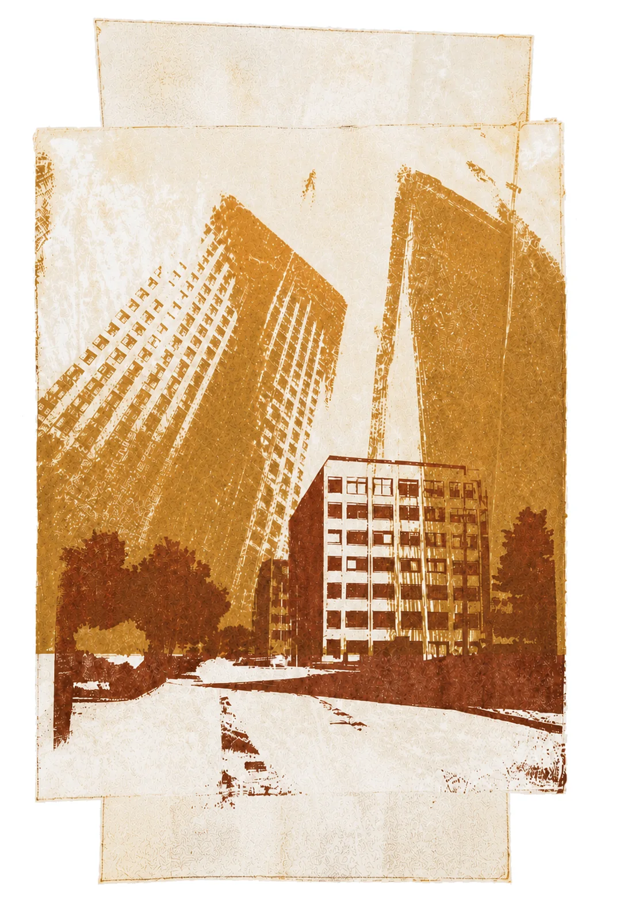
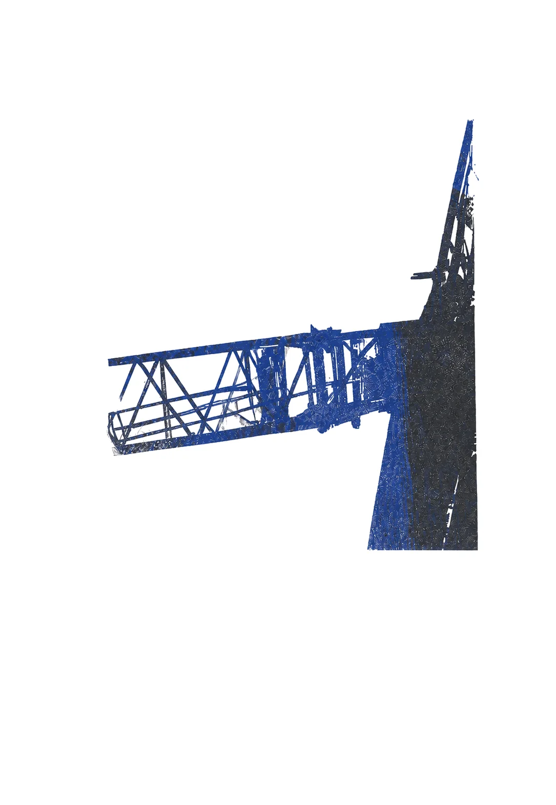
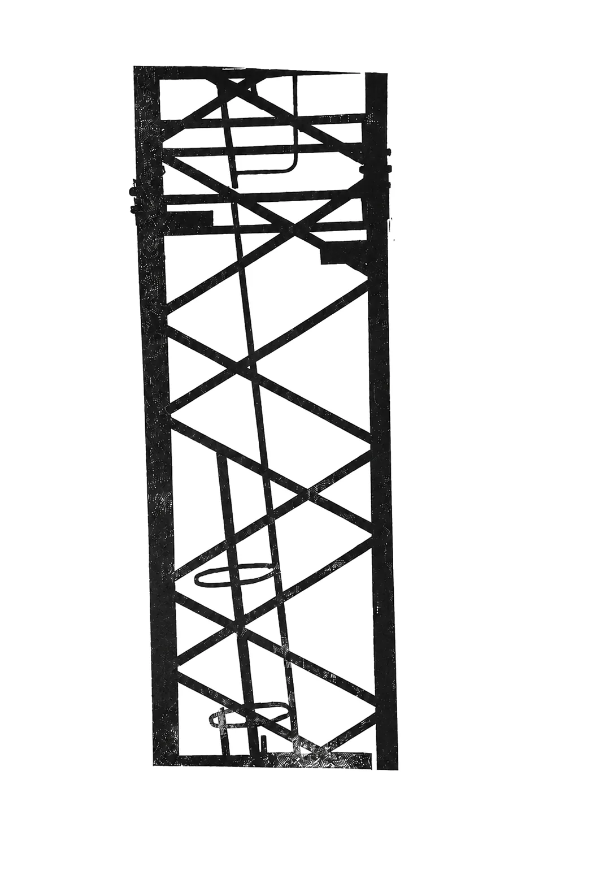

LATERAL WORKSHOP
A weekend retreat for mid-career professionals entering AI safety.
September 11–13, 2026 · San Francisco Bay Area
ApplyPremise
AI may soon surpass human capabilities, no one yet knows how to control systems like that, and failure could be permanent, for everyone.
The harder question is where you fit. For experienced professionals, a move means navigating family, finances, status, and a network built in another field. The field needs people who have managed teams, run operations, and scaled organizations, and it has almost no path in for them.
Lateral Workshop brings together a small cohort of mid-career professionals, people already doing the work, and a structured transition process, so you leave with a concrete plan and people who will help you follow it.
The weekend
A working weekend, structured around the decision in front of you:
- Candid conversations with practitioners about what the work is actually like, where teams need experienced people, and what commonly goes wrong in a transition.
- Role mapping that translates your experience into concrete paths across research, engineering, policy, operations, product, and management.
- Transition planning that pressure-tests options against your real constraints and turns a broad intention into sequenced next steps.
- A peer cohort that makes a difficult move less isolating.
Afterward
Most of the program happens after the weekend.
Retreat energy usually fades once ordinary work resumes, so the program is built for follow-through:
- Recurring cohort check-in calls to review commitments, unblock decisions, and revise plans as things develop.
- Introductions to people and organizations relevant to your transition path.
- Help identifying and pursuing career transition funding when it would make a move possible. Grants are not guaranteed; we help you navigate what exists.
Who it’s for
- You’re several years into a career in engineering, product, operations, policy, research, management, or another relevant field.
- You have a grounding in AI risk: a BlueDot course, comparable study, or relevant work.
- You’re taking the possibility of a near-term transition seriously.
Questions
- Do I need a technical background?
- No. The field is short on operators, managers, policy people, and communicators as much as engineers. Technical and non-technical paths are both in scope.
- I haven’t done a BlueDot course. Can I apply?
- Yes. A BlueDot course is the most common way applicants build context, but comparable self-study or work experience counts. Tell us how you built your grounding when you apply.
- Why only a weekend?
- A weekend fits people balancing established jobs, families, and other commitments. The longer work happens in the follow-through program.
- How big is the cohort?
- Small by design: the right dozen people beat the wrong forty. Selection prioritizes serious intent and a mix of experience that lets the cohort help each other.
- What does it cost?
- Cost and travel support details will be published with the application. If money is the blocker, say so when you apply.
A focused weekend, a small cohort, and follow-through that continues after everyone goes home.
September 11–13, 2026 · San Francisco Bay Area
Apply